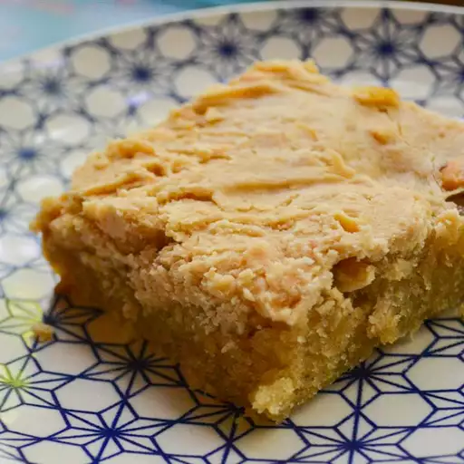

Peanut Butter Cake

Soft peanut butter cake with gooey marshmallow icing
This soft and moist peanut butter cake is tipped with sweet, gooey marshmallow icing for the perfect combination of rich peanut butter flavor and creamy sweetness.
Its an easy, comforting dessert thats perfect for any occasion
Ingredients
2 cups all purpose flower
2 cups white sugar
1/2 teaspood baking soda
1/4 teaspood salt
1 cup milk
1 stick melted butter
1/2 cup peanut butter
1/4 cup vegetable oil
3 large eggs
1/2 cup buttermilk
1 teaspoon vanilla extract
2/3 cup white sugar
1/3 cup evaporated milk
1 tablespoon butter
1/3 cup chunky peanut butter
1/3 cup miniature marshmallows
1/2 teaspoon vanila extract
Directions
- Preheat the oven to 350 degrees F (175 degrees C). Grease a 10x15x1 inch jellyroll pan
- stir flour, 2 cups sugar,baking soda, and salt together in a large bowl; set aside
- Combine water and 3/4 cup of butter in a saucepan; bring to a boil. Remove from the heat and stir in 1/2 cup peanut butter and vegetable oil until well blended; stir mixture into dry ingredients. Combine eggs,buttermilk, and vanilla together; stir into peanut butter mixture until well blended. Spread batter evenly in the prepared pan.
- Bake in the preheated oven until a toothpick inserted near the center comes out clean, about 18 to 26 minutes.
- Meanwhile, make the frosting: Place 2/3 cup sugar, evaporated milk, and butter in a saucepan. Bring to a boil, stirring constantly. Cook strirring for 2 minutes. Remove from heat and stir in the peanut butter, marshmallow and vanilla until marshmallows are melted and the mixture is smooth.
- Spoon the frosting over the warm cake and spread in an even layer.Allow to cool before cutting and serving.
Home